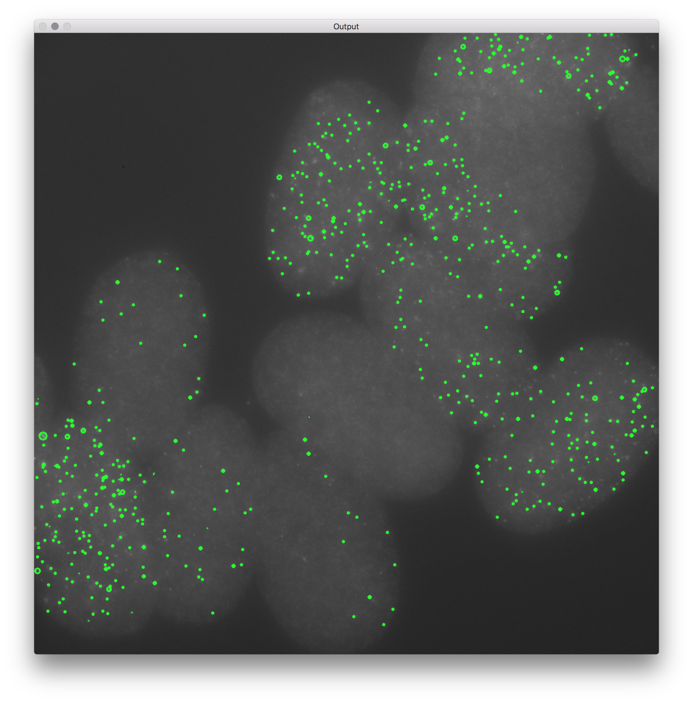
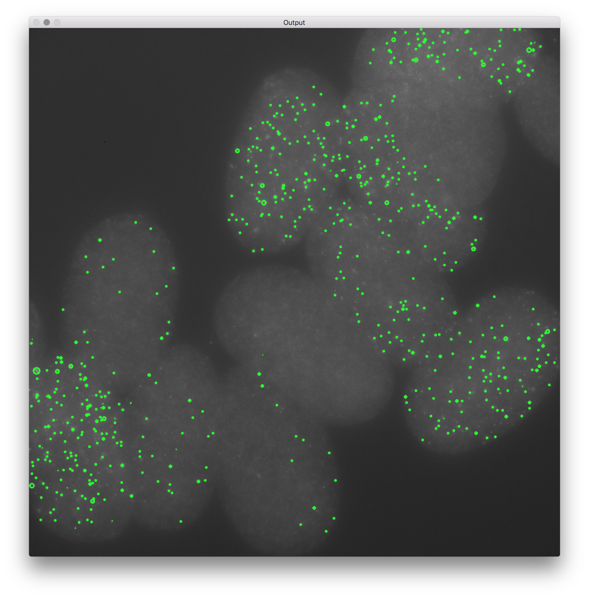

GRAF
Introduction
This is graf, software for counting cells in FISH microscopy images. graf uses image processing techniques such as Canny edge detection and watershed thresholding along with connected component analysis to identify/count these cells. This avoids the problem of having to train a learning algorithm, which can waste lab time and also be clunky to use.
Usage
Currently, graf is in early development stages and does not have a GUI. That means graf must be used from the terminal and also requires a functional installation of OpenCV (in addition to a scientific install of Python). The single script that must be called right now is graf.py. The usage is shown below.
Usage:
python graf.py (-i | --image <path/to/image>)
For now, there is only the -i | --image option (which is required) that takes the image path argument. This is used to specify the image to analyze. Image stacks are not supported because graf is in such early stages of development. This feature will come in a future update. An example of what graf currently does is shown below.
Screenshots


 
The above images show the output in both the terminal (which shows the counted number of cells) as well as the OpenCV image visualizations that depict the cells detected by

The above images show the output in both the terminal (which shows the counted number of cells) as well as the OpenCV image visualizations that depict the cells detected by graf and highlight their positions on the image. This example image of C. elegans embryos was taken from Rifkin Labs and all rights to the image belong to them as specified.